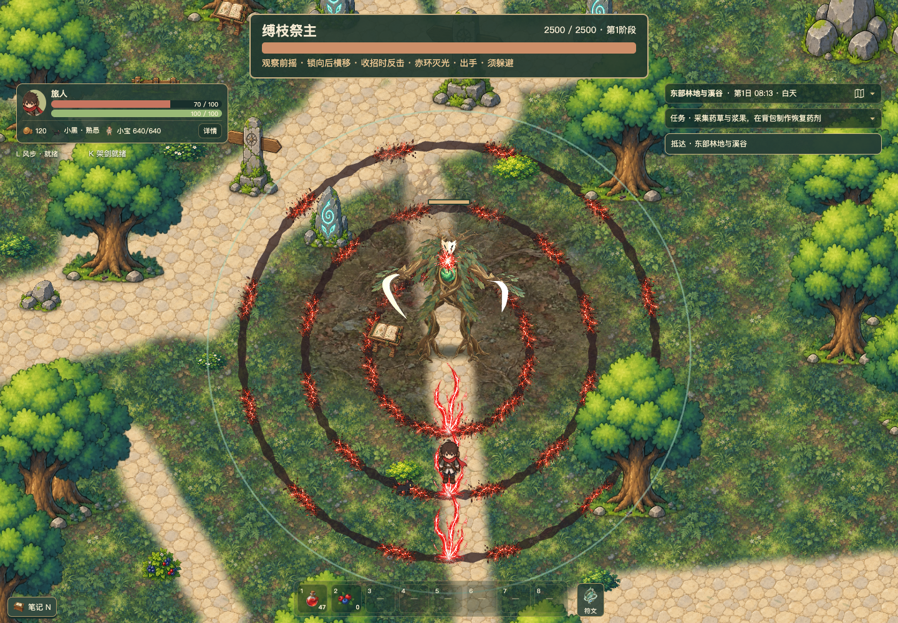

东侧首领攻击增强
缚枝祭主：更宽双镰、五秒旋转光柱、三圈赤环。伤害不打断施法，弹反仍能中断；黑洞可以牵引。
正常速度与慢放对照
正常速度 · 左旧版，右增强版旧版先结束后保持末帧。相同初始站位和视角设置，真实受击仍会移动相机。四分之一慢放慢放不补间、不生成额外动作。
完整招式
赤环灭光：蓄力 → 五秒旋转 → 三环刻线 → 追爆 → 收势 · 查看慢放双镰连续出手：190 半径、120°扇形 · 查看慢放
真实反馈与牵引
施法中黑洞牵引，最多四个重叠裂缝确定触发只设置随机数，伤害、碰撞与招式仍由正式游戏结算。正式架剑按键产生完美弹反 · 普通弹反录像
三环落地与安全带

圆心取开始刻线时的首领位置，落地后固定；伤害只结算圆环带。
本机采样
| 场景 | 帧时间 P95 | 首领纹理峰值 | 关键出手缺帧 |
|---|
| 完整压缩赤环 | 16.7 ms | 151.13 MiB | 0 |
| 第二阶段／保存刷新 | 16.7 ms | 126.06 MiB | 0 |
| PNG／保存刷新 | 33.4 ms | 191.78 MiB | 0 |
18 个相关测试文件、427 项检查通过；17 个浏览器用例分批通过。类型检查与生产构建通过。P0／P1 审查：PASS，未发现阻塞项。